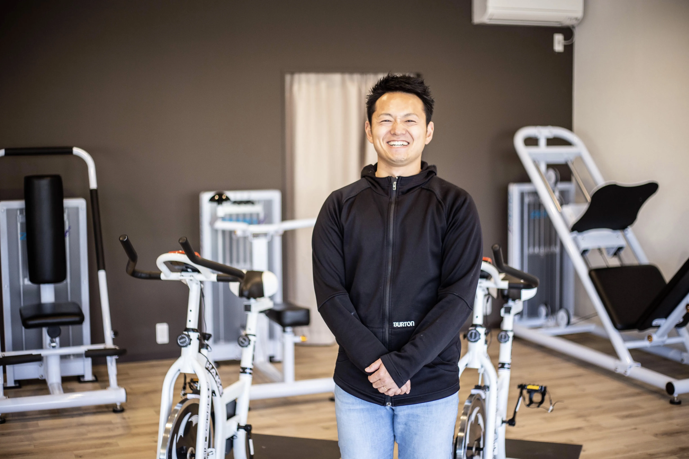

About
石川 卓
代表プロフィール・会社概要
株式会社Piste 代表取締役 / Piste AI EVANGELISTS 代表 / AIコンサルタント
代表プロフィール

石川 卓（いしかわ すぐる）
株式会社Piste 代表取締役
岐阜大学工学部修士課程修了後、大手鉄鋼メーカーにてエンジニアとして約8年間勤務。その後独立し、AIエンジニア・コンサルタントとして400社以上のAI導入を支援してきました。
自らもフィットネスクラブを経営し、予約管理、顧客対応、会計処理、SNS運用、集客施策をAIで自動化しています。技術を知っているだけでなく、実際の事業運営で使う視点から支援します。
実績・認定
- Anthropic 公式パートナーネットワーク認定企業。Claude を開発する Anthropic のパートナーとして、最新のAI技術を活かした導入支援を提供しています。
- 400社以上のAI導入支援。製造業・建設業・飲食店・小売店・士業・ネットショップなど、幅広い業種の中小企業を支援。
- 中部経済新聞に掲載（2026年5月26日付）。AI活用・業務効率化を支援する取り組みが紹介されました。掲載記事PDF
- 2026年7月に法人化し、株式会社Pisteとして体制を強化。
専門領域
- Claude Code の導入・セットアップと、非エンジニア向けの操作レクチャー
- 会計・EC・SNS・チャット・予約など業務ツールと Claude Code の連携による自動化
- 資金繰り・粗利・請求書・現場記録など、中小企業の「記録を整えて判断材料にする」仕組みづくり
- 従業員向けAI研修（人材開発支援助成金の活用）
- 社内ルール（CLAUDE.md）・権限設定・機密情報の取り扱いなど、安全に使い続けるための運用設計
情報発信
- ブログ「AI活用コラム」 — 中小企業向けの Claude Code・AI活用ガイドを毎日更新
- ココナラ — スポット相談・レクチャーの受付
- LINE公式アカウント — Claude Code セットアップガイド（PDF）を無料配布
会社概要
| 社名 | 株式会社Piste（Piste AI EVANGELISTS） |
|---|---|
| 代表者 | 代表取締役 石川 卓 |
| 所在地 | 〒447-0042 愛知県碧南市中後町3-3 中央ビル1F |
| 事業内容 | AI導入コンサルティング、Claude Code 導入サポート、AI研修プログラム、業務自動化支援 |
| 対応エリア | 全国（オンライン）。愛知県・西三河エリアを拠点に活動。愛知県の企業様へ |
| 認定 | Anthropic 公式パートナーネットワーク |
| お問い合わせ | お問い合わせフォーム（電話・メールでのやり取りはフォーム受付後にご案内します） |